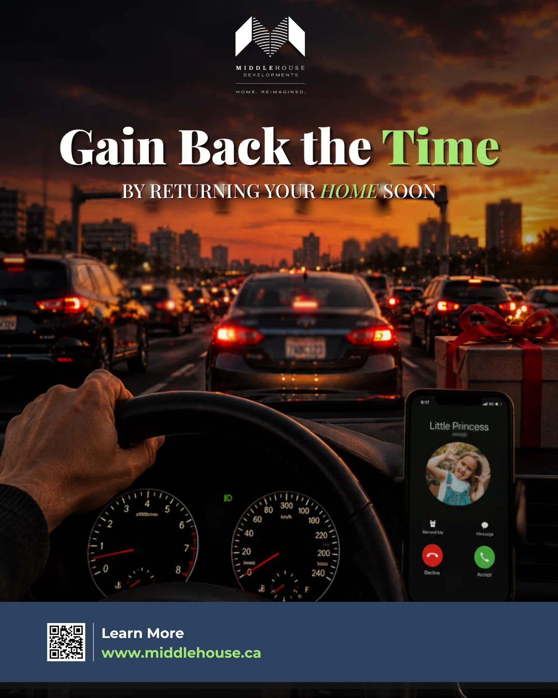
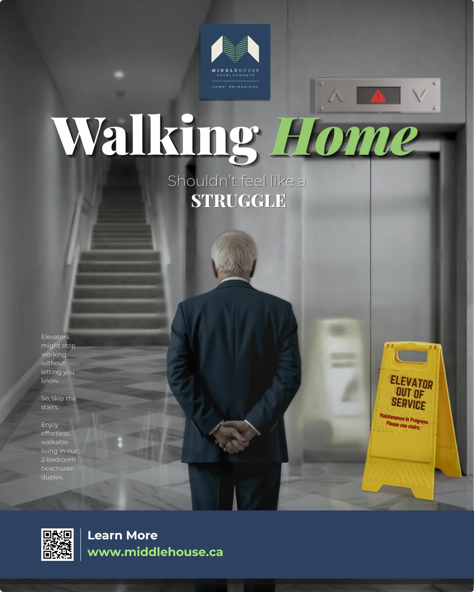
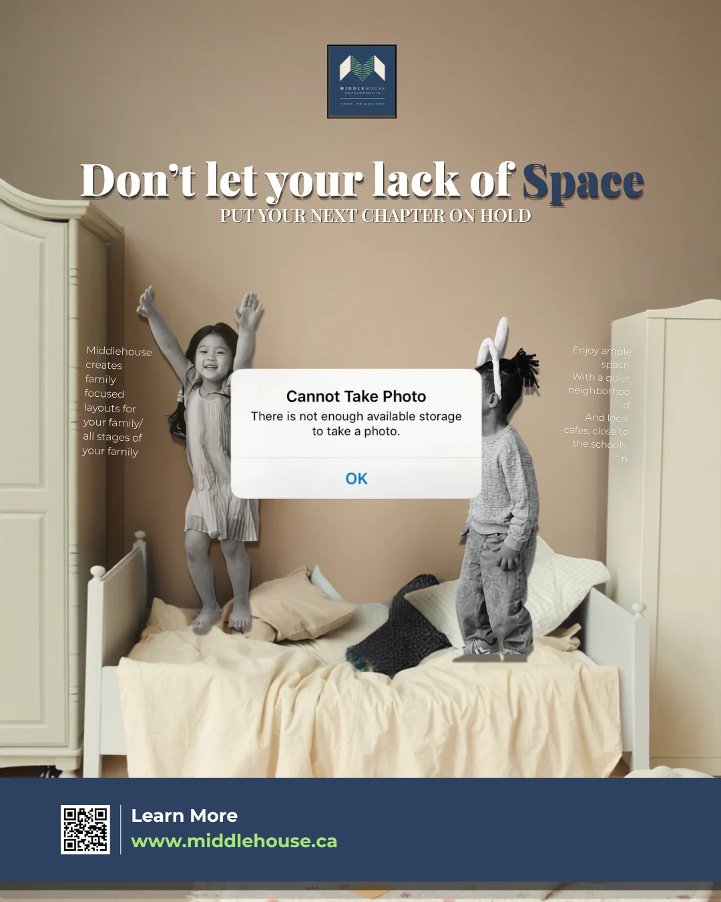
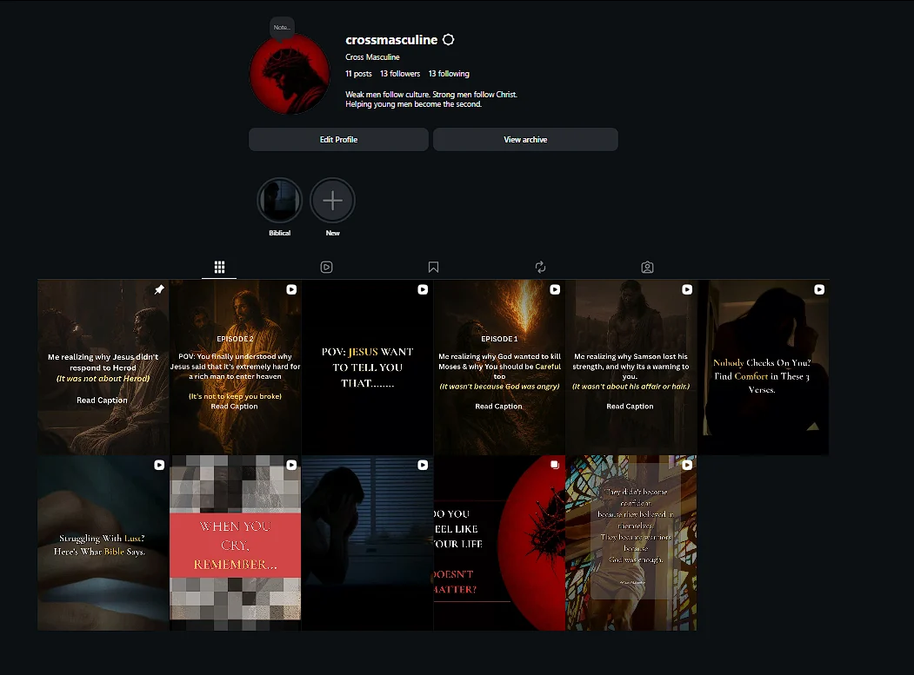

Digital Marketer · Social Media Coordinator · Toronto
I learn marketing by building it.
Hey! I'm Robert, a digital marketer with hands-on experience in organic content, social media, and paid campaigns. I combine creative strategy, audience research, analytics, and AI-powered tools to turn ideas into measurable marketing work.
Market58 is a social listening and market research app I built to give small businesses the kind of audience intelligence usually reserved for big budgets. It collects public conversations from YouTube and Google Search and imports discussions from other platforms, including Reddit, then classifies records by sentiment, intent, and funnel stage.
AudienceLab is the newest part: it turns that classified conversation data into audience personas, and then into synthetic interviews, so you can pressure-test messaging before spending a dollar of media.
Why this is a marketing project, not just a coding project
Designed the pipeline like a researcher: collect, classify, then decide.
Built the collector plugins myself, including a platform-neutral CSV importer for community discussions.
Structured the rebuild on a modular plugin architecture, so new sources plug in without rewrites.
Designed for repeatable analysis: local evidence storage, caching, evidence export, and structured reports make the workflow easier to audit.
I have written about the build on LinkedIn, including a project section with two posts walking through it.
Public-conversation research, evidence classification, customer pain points, funnel strategy and documented insights — demonstrated with a real Ridgeway Cargo research run.
725records collected430analyzed in report3source platforms
Research-grounded fictional audience personas, a reactive emotional avatar, and structured AI-assisted interviews. Explore Alex's saved interview with real recorded VAD changes.
4selected real exchangesVADemotion animation0new AI calls
Original HTML/CSS/SVG interface retained. The showcased participant is synthetic, not a real customer.
Where I've worked
Hands on, in more than one seat.
May 2026 – Aug 2026
MiddleHouse Developments ↗ — Social Media Coordinator Intern, TorontoRelaunched the Instagram presence; built the content strategy, framework, and creative system.
Oct 2026 – Present
ScubaSeasons ↗ — Marketing ApprenticeAudience research across large scuba communities: engagement patterns, pain points, and opportunity lanes.
Jan 2023 – Dec 2023
DataPath Ltd — BPO Executive, Analytics, DhakaAdvanced Excel reporting and analysis across 100+ U.S. client portfolios; direct client communication on data issues.
Toolkit
Meta Ads
Google Analytics
Content strategy
Audience research
Copywriting
Python (Pandas)
SQL
Advanced Excel
Canva
Affinity Designer & Photo
Certified: HubSpot Social Media Marketing Certification, IBM Data Science Professional Certificate, Data Analysis with Python, Using Python to Access Web Data.
Education: Master of Management, Trent University.
MiddleHouse · Research → Strategy → Execution
MiddleHouse: audience-led marketing, not just design.
The strategy came first. The designs were its execution. My role combined audience research, competitive analysis, content planning, creative production and performance reviews—not graphic design alone.
01 · RESEARCHDiagnose the audience
Audited the previous Instagram account, studied competitors and mapped buyer needs and objections.
02 · PLANBuild the content system
Developed three content tiers, themes, buyer personas and pain-point-led messages across funnel stages.
03 · EXECUTE & LEARNTurn insight into campaigns
Created posts and Reels, monitored early account results and refined the approach using performance observations.
Account growth: The relaunched Instagram account reached a follower count 125% higher than the previous account, with 62.5% fewer posts. Comparison reported from the MiddleHouse project.
Below: selected campaign assets demonstrating how research-led messages became creative execution.

Time reclaimed · A commute-focused message

Walking home · A lifestyle-driven visualMortgage decisions · A value-focused campaign

Space to grow · A household pain pointFamily & home · An aspirational campaignDaily convenience · A feature-to-benefit messageMake it yours · A customization-oriented visual
1 / 7
Campaign video execution
Short-form campaigns in motion.
Hover over a Reel to see a short, silent looping preview. Tap to preview on mobile, or open the full video. Previews only download when requested.
392 link clicks · approximately C$14 spent · approximately C$0.04 CPC
Results from a five-day personal Meta traffic test. These are link-click metrics, not purchases or conversions.
As a personal paid-media project, I planned and ran a Meta and Instagram traffic campaign, working on audience selection, creative, copy, landing destination, and performance monitoring. Small budget, real money, and real optimization decisions.

Campaign setup and reporting from the live campaign.
Meta Ads
Audience targeting
Creative testing
Campaign optimization
Performance analytics
What I do, hands on
The work, by craft.
Everything below is work I have actually done, not coursework. Each craft maps to the core of professional marketing roles: planning, executing, measuring, and learning.
Campaign planning and execution
Planned, launched, and optimized a Meta and Instagram traffic campaign end to end: audience approach, creative, copy, landing destination, and performance monitoring.
Relaunched a company's Instagram presence from zero as Social Media Coordinator intern: content system, pain-point-led messaging across funnel stages, competitor benchmarking presented to leadership.
Performance analytics
Read campaign data like a marketer: creative performance, audience response, and traffic quality, then optimized from what the numbers said.
Advanced Excel, Python (Pandas), and SQL from analytics work across 100+ U.S. client portfolios, with direct client communication on data issues.
Audience research and content strategy
Built Market58, a social listening app that classifies public conversations by sentiment, intent, and funnel stage, plus AudienceLab for personas and synthetic interviews.
Ran audience research across large scuba communities as a marketing apprentice: engagement patterns, pain points, and opportunity lanes.
Built a repeatable content framework (tiers, themes, audience needs, personas) to guide planning, production, and measurement.
Independent design practice
Creative concepts and visual experiments.
A few selected pieces from my earlier portfolio. These are design exercises, separate from the paid-media performance results above.